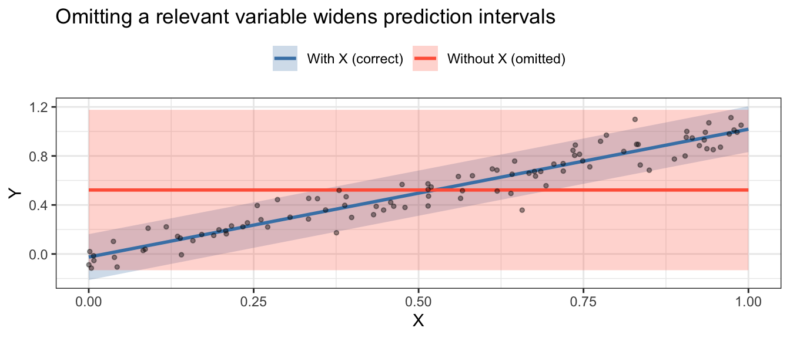
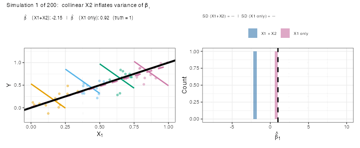
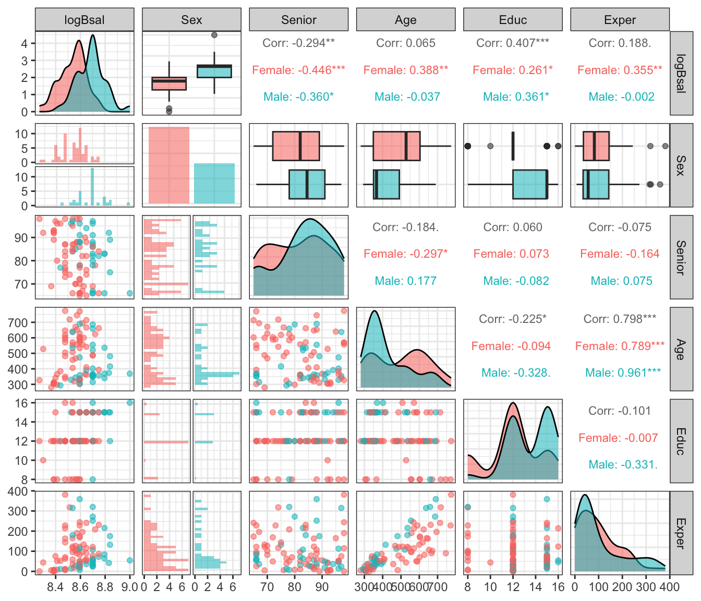

Model Selection
Learning Objectives
- Follow a seven-step workflow for building a multiple regression model.
- Know the three goals of a regression analysis and how they shape model building.
- Understand the costs of including too few or too many variables.
- Apply backward stepwise regression using
step(). - Compare non-nested models with AIC and BIC.
- Conduct a final \(F\)-test to answer a primary research question after variable selection.
- Chapter 12 in the textbook.
A Seven-Step Workflow
Building a multiple regression model is iterative, not a single pass. Below is a structured workflow; Steps 3–5 are often repeated several times.
| Step | Action |
|---|---|
| 1 | Identify your objective (inference, exploration, or prediction). |
| 2 | Screen available explanatory variables — keep relevant ones, drop near duplicates. |
| 3 | Exploratory data analysis: scatterplots of \(Y\) vs each \(X\), and of \(X\)’s vs each other. |
| 4 | Transform variables based on EDA (log, polynomial, etc.). |
| 5 | Fit a rich model; check residuals and influential observations. If problems remain, return to Step 3. |
| 6 | Variable selection: \(F\)-tests, stepwise regression, AIC/BIC. |
| 7 | Proceed with the final model: report estimates, confidence intervals, and \(p\)-values. |
The rest of this lecture covers Steps 1, 2, 6, and 7 in detail. Steps 3–5 are covered in the EDA and assumptions lectures.
Step 1: Goals of Analysis
Knowing your goal shapes every model-building decision.
Goal 1: Inference About a Specific Variable
- You care about the association between one explanatory variable (\(X_1\)) and \(Y\).
- Other variables are confounders you want to control for.
- Strategy: use variable selection (Step 6) to choose good controls; then add \(X_1\) at the end and test it formally.
- Example: “Is sex associated with salary, after adjusting for seniority, age, and education?”
Goal 2: Exploratory — Fishing for Associations
- No single variable of primary interest; you want to discover what matters.
- Iterate through adding/removing variables, checking residuals, refining transformations.
- Warning: \(p\)-values no longer have their usual meaning after variable selection. You have run many implicit tests; treat the model as descriptive, not confirmatory.
Goal 3: Prediction
- You want to minimize prediction error for new observations.
- Interpretation of individual coefficients is secondary.
- Choose variables by predictive criteria (AIC, cross-validation), not by \(p\)-values.
Step 2: Screen Available Variables
- List all explanatory variables relevant to your objective.
- Drop variables that are exact or near-exact linear combinations of others — they create numerical instability.
- Note pairs of variables you expect to be highly correlated. High correlation is not a reason to drop a variable on its own, but it will inflate standard errors (see below).
- Variables not included at this step will not be in the final model, so be inclusive rather than exclusive here.
Steps 3–5
- Exploratory data analysis.
- Tons of scatterplots / Look at correlation coefficients.
- Transformations based on EDA.
- Fit a rich model and look at residuals.
- Look for curvature, non-constant variance, and outliers.
- Outliers
- Linear Model Assumptions and Transformations
- MLR EDA
- Iterate the above steps until you don’t see any issues.
Step 6: Variable Selection
The Variable Selection Problem
Including too few or too many variables both hurt your analysis.
Too Few Variables: Omitted Variable Bias
- When a confounder is omitted, the coefficient on \(X_1\) absorbs its effect. This is called omitted variable bias.
- Example: men may appear to earn more than women, but the gap narrows once you control for job type, seniority, and experience.
- Omitting relevant variables also widens prediction intervals, because \(\hat\sigma^2\) absorbs the unexplained variation.
- The shaded bands are 95% prediction intervals.
- Omitting \(X\) makes the prediction interval far wider because the model mistakes the variation explained by \(X\) for unexplained noise.
Too Many Variables: Multicollinearity
- When two explanatory variables are highly correlated, it is hard to separate their individual effects.
- The standard errors of both coefficient estimates inflate — estimates become unstable.
- In any single dataset, the estimated slope can be wildly off from the truth, even though the estimator is still unbiased on average.
Animation: Collinearity in Action
The true model is \(\mu(Y \mid X_1) = X_1\) (slope = 1, no \(X_2\) effect), but \(X_1\) and \(X_2\) are nearly identical. Each frame below simulates a fresh dataset and fits the model \(Y \sim X_1 + X_2\):
- Left: points colored by \(X_2\) quartile; colored segments show the fitted adjusted slope within each \(X_2\) group; the black line is the truth (slope = 1).
- Right: the histogram of estimated \(\hat\beta_1\) builds up across simulations.

- Left panel: colored segments are the \(X_1\)+\(X_2\) adjusted slopes (one per \(X_2\) quartile, all parallel — same \(\hat\beta_1\)); the dashed pink line is the \(X_1\)-only slope; the solid black line is the truth (slope = 1).
- Right panel: the pink (\(X_1\) only) histogram builds into a tight spike near 1; the blue (\(X_1\)+\(X_2\)) histogram spreads widely across the \(x\)-axis.
- The SD values in the subtitle quantify the difference: including a near-duplicate \(X_2\) inflates the standard deviation of \(\hat\beta_1\) by roughly a factor of 20 or more.
- The histogram shows that \(\hat\beta_1\) is unbiased on average, but the variance is enormous.
- In practice you only have one dataset: your estimate could be anywhere in that histogram.
Stepwise Regression
The Idea
- Backward elimination: Start with the most complex model, remove the term whose removal most improves (or least worsens) a criterion, repeat.
- Forward selection: Start with intercept only, add the term that most improves the criterion, repeat.
- Both directions: Mix of adding and removing at each step.
The step() Function
step()in R uses AIC as its criterion: it accepts a step if AIC decreases.- Smaller AIC = better model.
step()returns anlmobject —tidy(),glance(),anova()all work on it.
case1202 <- read_csv("https://dcgerard.github.io/stat_302/data/case1202.csv") |>
mutate(logBsal = log(Bsal),
Age2 = Age^2,
Exper2 = Exper^2)lm_rich <- lm(logBsal ~ Senior + Age + Age2 + Educ + Exper + Exper2,
data = case1202)
lm_step <- step(lm_rich, trace = FALSE)
tidy(lm_step)# A tibble: 6 × 5
term estimate std.error statistic p.value
<chr> <dbl> <dbl> <dbl> <dbl>
1 (Intercept) 8.63 0.132 65.2 1.21e-75
2 Senior -0.00323 0.00111 -2.90 4.69e- 3
3 Age -0.000338 0.000145 -2.33 2.20e- 2
4 Educ 0.0207 0.00500 4.13 8.37e- 5
5 Exper 0.00197 0.000505 3.90 1.89e- 4
6 Exper2 -0.00000413 0.00000130 -3.18 2.07e- 3Age2was dropped; everything else was retained.
Warning: \(p\)-values After Stepwise
- \(p\)-values in the final model cannot be interpreted at face value after stepwise selection — you have implicitly run many tests.
- Use the selected model to describe the data or for prediction, not for formal inference about variables that were part of the selection process.
- Exception: a variable pre-specified as the primary interest (Goal 1) can still be tested formally after variable selection — see §“Final Inference” below.
AIC and BIC
When Can’t We Use the \(F\)-test?
- The \(F\)-test requires the reduced model to be a special case of the full model (nested models).
logBsal ~ Senior + Educ + Exper + Exper2vslogBsal ~ Senior + Educ + Age + Age2are not nested — neither is a special case of the other.- For non-nested models we need a different comparison criterion.
Formulas and Intuition
Both AIC and BIC penalize RSS for model complexity:
\[\text{AIC} = n \log\!\left(\frac{RSS}{n}\right) + 2(p + 1)\]
\[\text{BIC} = n \log\!\left(\frac{RSS}{n}\right) + \log(n)\,(p + 1)\]
- Smaller is better for both.
- \(p\) = number of regression coefficients.
- AIC: lighter penalty → picks slightly larger models → prefer when predicting.
- BIC: heavier penalty (grows with \(n\)) → picks sparser models → prefer for interpretation and inference.
- Differences of less than ~2 units are negligible.
lm_exper <- lm(logBsal ~ Senior + Educ + Exper + Exper2, data = case1202)
lm_age <- lm(logBsal ~ Senior + Educ + Age + Age2, data = case1202)
bind_rows(
glance(lm_exper) |> mutate(model = "Exper model"),
glance(lm_age) |> mutate(model = "Age model")
) |>
select(model, AIC, BIC, r.squared, adj.r.squared)# A tibble: 2 × 5
model AIC BIC r.squared adj.r.squared
<chr> <dbl> <dbl> <dbl> <dbl>
1 Exper model -146. -131. 0.355 0.325
2 Age model -139. -124. 0.299 0.268- The experience model has lower AIC and BIC — preferred on both counts.
Case Study: Sex Discrimination at a Bank
Background
- Harris Trust and Savings Bank was sued for sex discrimination in the 1970s.
- 93 employees hired as clerical workers between 1969 and 1977.
- Response:
Bsal— beginning salary (dollars). - Goal (Goal 1): Is sex associated with starting salary, after controlling for other variables?
| Variable | Description |
|---|---|
Bsal |
Beginning salary (dollars) |
Sex |
Male or Female |
Senior |
Seniority (months since hired) |
Age |
Age (months) |
Educ |
Education (years) |
Exper |
Prior work experience (months) |
Steps 3–5: EDA
ggpairs(case1202,
columns = c("logBsal", "Sex", "Senior", "Age", "Educ", "Exper"),
aes(color = Sex, alpha = 0.5),
upper = list(continuous = wrap("cor", size = 3)))
logBsalis more symmetric than rawBsal.- Males start at higher salaries.
AgeandExperare positively correlated (\(r \approx 0.8\)) — collinearity to watch.- Quadratic terms for
AgeandExpermay be warranted given the scatter.
Step 6: Variable Selection
Sex is the primary question — exclude it from stepwise selection and add it back for the final test. Run stepwise on the control variables only:
lm_rich_controls <- lm(logBsal ~ Senior + Age + Age2 + Educ + Exper + Exper2,
data = case1202)
lm_step_controls <- step(lm_rich_controls, trace = FALSE)
tidy(lm_step_controls)# A tibble: 6 × 5
term estimate std.error statistic p.value
<chr> <dbl> <dbl> <dbl> <dbl>
1 (Intercept) 8.63 0.132 65.2 1.21e-75
2 Senior -0.00323 0.00111 -2.90 4.69e- 3
3 Age -0.000338 0.000145 -2.33 2.20e- 2
4 Educ 0.0207 0.00500 4.13 8.37e- 5
5 Exper 0.00197 0.000505 3.90 1.89e- 4
6 Exper2 -0.00000413 0.00000130 -3.18 2.07e- 3Age2was dropped;Senior,Age,Educ,Exper,Exper2were retained.
Step 7: Final Inference on Sex
Add Sex to the stepwise-selected model and test it:
lm_final <- lm(logBsal ~ Sex + Senior + Age + Educ + Exper + Exper2,
data = case1202)
tidy(lm_final, conf.int = TRUE)# A tibble: 7 × 7
term estimate std.error statistic p.value conf.low conf.high
<chr> <dbl> <dbl> <dbl> <dbl> <dbl> <dbl>
1 (Intercept) 8.57 0.110 78.1 1.20e-81 8.35 8.79
2 SexMale 0.140 0.0217 6.48 5.40e- 9 0.0974 0.184
3 Senior -0.00326 0.000919 -3.55 6.28e- 4 -0.00509 -0.00143
4 Age -0.0000208 0.000129 -0.161 8.72e- 1 -0.000277 0.000236
5 Educ 0.0137 0.00426 3.22 1.79e- 3 0.00526 0.0222
6 Exper 0.00155 0.000422 3.68 4.12e- 4 0.000711 0.00239
7 Exper2 -0.00000413 0.00000107 -3.85 2.26e- 4 -0.00000626 -0.00000200tidy(lm_final, conf.int = TRUE) |>
filter(term == "SexMale") |>
mutate(across(c(estimate, conf.low, conf.high), exp))# A tibble: 1 × 7
term estimate std.error statistic p.value conf.low conf.high
<chr> <dbl> <dbl> <dbl> <dbl> <dbl> <dbl>
1 SexMale 1.15 0.0217 6.48 0.00000000540 1.10 1.20- On the log scale: males start at \(\hat\beta_{\text{Sex}} \approx 0.13\) log-dollars more.
- On the original scale: males start at \(e^{0.13} \approx 1.14\times\) the salary of comparably qualified females — about 14% higher.
- 95% CI for the multiplicative effect: roughly 1.09 to 1.19.
- Conclusion: We have very strong evidence that males received higher starting salaries than comparably qualified females (\(p < 0.001\)), even after adjusting for seniority, age, education, and experience.
Exercises
1. Using the bank data, suppose we are only interested in whether education is associated with log salary, after adjusting for other variables.
Fit a rich model (without
Sex) that includesSenior,Educ,Age,Age2,Exper, andExper2. Usetidy()to examine the coefficients.Run
step()on the rich model. Note whetherEducis kept or dropped.Regardless of whether
step()keptEduc, add it to the stepwise-selected model and test it with a \(t\)-test. State a conclusion in context. Why is this \(p\)-value interpretable, even after runningstep()?
2. Consider these three models fit to the bank data:
lm_a <- lm(logBsal ~ Senior + Educ + Exper + Exper2, data = case1202)
lm_b <- lm(logBsal ~ Senior + Age + Age2, data = case1202)
lm_c <- lm(logBsal ~ Senior + Educ + Age + Exper, data = case1202)Which pairs of models are nested? For any nested pair, set up and run an \(F\)-test.
For the non-nested pairs, compare AIC and BIC using
glance(). Which model do you prefer, and why?Do AIC and BIC agree? If they disagree, which criterion should you follow — and does the answer depend on the goal of the analysis?
3. A researcher fits a complex model and then runs step(), obtaining a simpler final model. She reports the smallest \(p\)-value from tidy() on the final model as evidence of a significant effect.
What is wrong with this approach?
Under what circumstances can a variable’s \(p\)-value be interpreted normally, even after stepwise selection?
If the goal were prediction, would the researcher’s approach be more or less problematic? Explain.